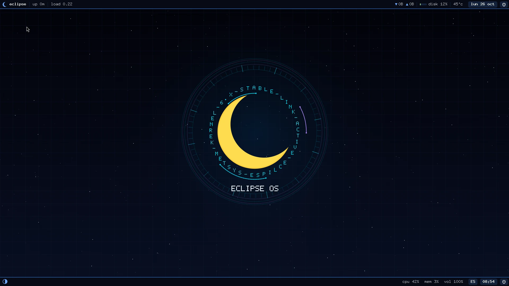
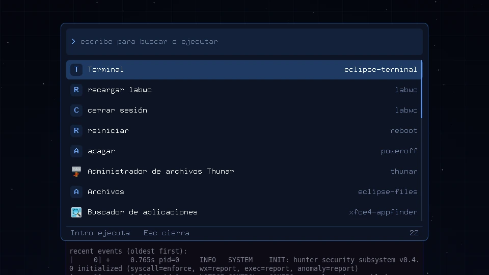
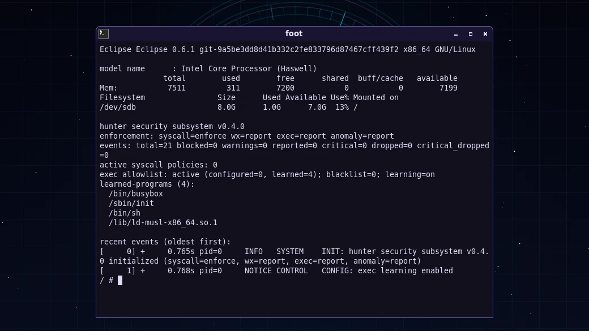
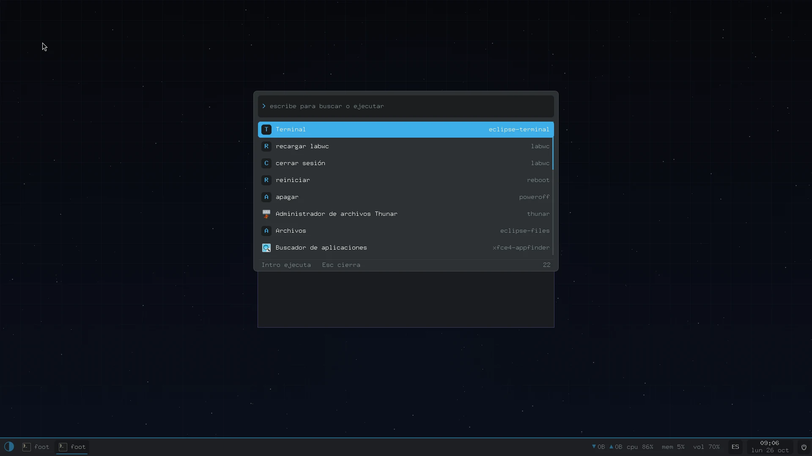
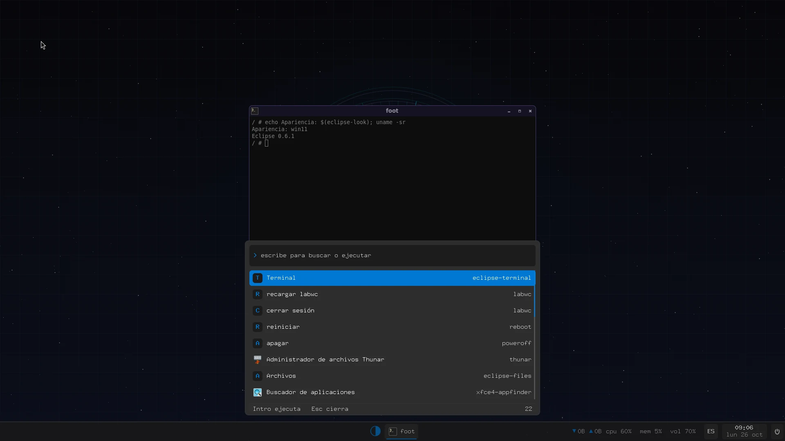

🦀
Seguro por diseño
El núcleo está escrito en Rust: sin desbordamientos de búfer ni punteros colgantes en el corazón del sistema. Es una reimplementación del micronúcleo Zircon.
Eclipse OS es un núcleo propio, escrito en Rust seguro, que entiende a Linux: arranca en segundos, ejecuta programas de Linux sin recompilarlos y trae un escritorio Wayland pensado desde cero.

lunarbg.Un micronúcleo moderno que no obliga a renunciar al software de siempre.
El núcleo está escrito en Rust: sin desbordamientos de búfer ni punteros colgantes en el corazón del sistema. Es una reimplementación del micronúcleo Zircon.
Implementa las llamadas al sistema de Linux siguiendo su propia documentación, así que BusyBox, Mesa, foot o labwc —compilados para Linux— se ejecutan tal cual, sin recompilar.
Sesión Wayland con labwc y piezas nativas: el fondo animado lunarbg, el panel lunarbar y un lanzador rápido. Tres estilos: Eclipse, KDE y Windows 11.
hunter vive dentro del núcleo: aplica políticas tipo LSM, vigila W^X y detecta comportamientos anómalos. Todo queda registrado en /proc/hunter.
Cada etapa del arranque se cronometra, del firmware a eclipse-init. Lo que no se mide no se mejora, y aquí se mide todo.
Drivers propios de AHCI, NVMe, e1000e, USB y sonido HDA; pila gráfica DRM/KMS compatible con Xorg y wlroots; y un instalador que deja el sistema en tu disco.
Todas las capturas están sacadas de una máquina virtual QEMU arrancando la ISO oficial 0.6.1: solo recortadas, sin retoques.

El lanzador aparece con Alt+Espacio: escribe y ejecuta. Aplicaciones, ajustes y apagado en el mismo sitio, en español.
Alt+Tab, Super+↑, Alt+F4
uname dice Eclipse, la raíz vive en EclipseFS —su propio sistema de archivos— y hunter informa en directo de lo que vigila.
apt desde el archivo de Ubuntu/proc y /sys compatibles con LinuxPulsa cualquier imagen para verla en grande.

eclipse-look kde.
Basta con una máquina virtual. Si te gusta, el instalador lo deja en tu disco.
Elige escritorio o mínima, para x86_64 o arm64, en la página de versiones.
eclipse-desktop-x86_64.iso.gz
Necesita firmware UEFI (OVMF) y al menos 4 GB de memoria.
gunzip eclipse-desktop-x86_64.iso.gz qemu-system-x86_64 -machine q35 \ -m 8G -smp 4 -vga virtio \ -drive if=pflash,format=raw,readonly=on,file=OVMF.fd \ -cdrom eclipse-desktop-x86_64.iso
Desde la consola del medio live, el instalador guía el resto.
# con un disco SATA o NVMe conectado
install-eclipse
Todo el sistema, del núcleo al escritorio, sale de un solo repositorio.